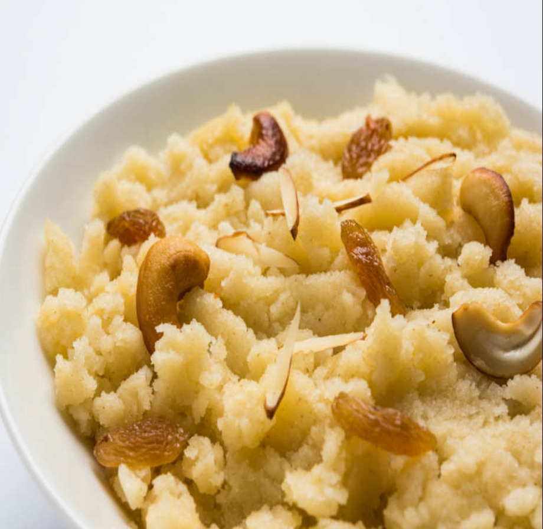

Halwa recipe
This is my favourite one. It looks tempting right! it's a traditonal indian breakfast and also used as sweet dish sometimes.
I'm sure you'll love it.
Ingredients
- 150 gm semolina
- 1 tablespoon sliced & slit raisins
- 1 1/2 cup boiled water
- 1/4 cup sugar
- 1/4 cup ghee
- 1 tablespoon chopped cashews
- 1/4 cup condensed milk
Steps
- Take a deep non-stick pan and heat it on medium flame. Add ghee and heat it for a minute. When ghee melts completely, add semolina (suji) and roast it well.
While roasting the semolina (suji), stir it continuously until it gives out a nice aroma and turns light golden in colour.
- When semolina (suji) shows a sand-like consistency, add chopped cashews and sliced raisins.
Mix them well and roast for a few minutes.
- Meanwhile, take another pan and heat in on medium flame. Pour water and milk in the pan and let it boil.
When it comes to a boil, add sugar. Stir it well.
- When the milk-water mixture is ready, carefully add the roasted semolina in the mixture.
Stir well while adding the semolina to ensure there are no lumps formed.
- Use the back of stirring spoon to break the formed lumps,
stir until the milk-water mixture combines well with semolina. Stir till it thickens.
- Cook the mixture till it thickens. When it starts to leave the sides of the pan, turn off the flame. Lastly,
garnish the halwa with chopped almonds and serve while it's still hot!
Enjoy your meal!
